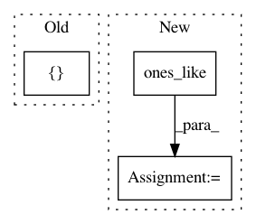

c8523b2dc735a1b82ca6170e6ca349defe9f77fc,examples/transformer.py,,,#,22
Before Change
tgt_text = text_data_batch["target_text"]
print("src_text:{}".format(src_text))
sess = tf.Session()
src, tgt = sess.run([src_text, tgt_text])
print("src:{}".format(src))
print("tgt:{}".format(tgt))
encoder_output = encoder(src_text["text_ids"][:, :-1],
After Change
src_text = text_data_batch["source_text_ids"]
tgt_text = text_data_batch["target_text_ids"]
decoder_inputs = tf.concat((tf.ones_like(tgt_text[:, :1]), tgt_text[:, :-1]), -1)
print("src_text:{}".format(src_text))
encoder_output = encoder(src_text,
sequence_length=text_data_batch["source_length"])
In pattern: SUPERPATTERN
Frequency: 3
Non-data size: 3
Instances
Project Name: asyml/texar
Commit Name: c8523b2dc735a1b82ca6170e6ca349defe9f77fc
Time: 2017-11-17
Author: shore@pku.edu.cn
File Name: examples/transformer.py
Class Name:
Method Name:
Project Name: tensorflow/ranking
Commit Name: 6bf3f51cd0a312da842157665663c2dad9983248
Time: 2021-01-29
Author: xuanhui@google.com
File Name: tensorflow_ranking/python/losses_impl.py
Class Name: ClickEMLoss
Method Name: _compute_latent_prob
Project Name: asyml/texar
Commit Name: 1a7fa6010b7234bb9efddf761c9bf52af07dc347
Time: 2018-07-12
Author: zhitinghu@gmail.com
File Name: texar/modules/embedders/position_embedders.py
Class Name: PositionEmbedder
Method Name: _build